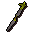

Staff of saradomin

| Config name | saradomin_staff |
| Item id | 2415 |
| Value | 80000 gp |
| Weight | 5lb |
| Members | Yes |
| Tradeable | No |
| Stackable | No |
| Equip slot | righthand |
| Options | Wield |
| Category | weapon_staff |
| Defined in | scripts/areas/area_mage_arena/configs/mage_arena.obj |
| Equipment stats | Stab att -1, Slash att -1, Crush att 6, Magic att 6, Stab def 2, Slash def 3, Crush def 1, Magic def 6, Strength 2 |
Staff of saradomin
It's a stick of the gods.
Sold at
| Shop | Shopkeeper | Stock |
|---|---|---|
| Mage Arena Staffs. | 5 |
Referenced in scripts
scripts/_test/scripts/cheats/cheat_bank.rs2scripts/areas/area_mage_arena/scripts/battle_mage.rs2scripts/areas/area_mage_arena/scripts/chamber_guardian.rs2scripts/areas/area_mage_arena/scripts/god_gear.rs2scripts/skill_combat/scripts/player/spells/scripts/saradomin_strike.rs2scripts/skill_combat/scripts/pvp/spells/scripts/saradomin_strike.rs2